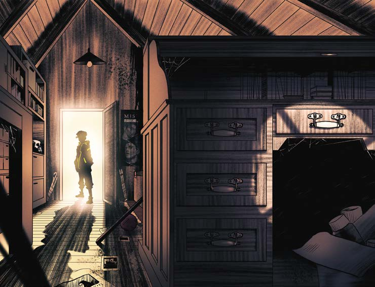

de llaves oxidadas, todas de un tamaño similar. ¿Cuál de todas es? Los nervios y la ansiedad lo carcomen. Pensá, Javier. No disponés de todo el tiempo para probar cada una; además, si introduce la llave equivocada, corre el riesgo de estropear la cerradura y eso sí que sería un problema. ¡Por fin! Le brillan los ojos mientras da vuelta una de las llaves